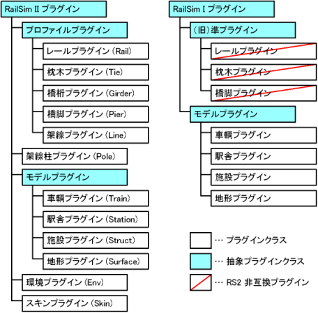

プラグインの種類
RailSim II は、プラグインと呼ばれる追加データにより、走らせる車輌やレイアウトに設置する建物などを増やしていくことが可能です。プラグインには様々な種類 (クラス) があり、部分的に共通する要素を持つ複数のプラグインクラスは抽象プラグインクラスという概念によりまとめられます。以下にプラグインクラスの継承関係図を示します。

抽象プラグインクラスは、実際にそのクラスのプラグインが存在するものではなく、複数のプラグインクラスに共通する機能を統括する役割を果たします。プラグインを作成する際には、この継承関係をよく理解し、作ろうとするプラグインのクラスがどのような位置付けにあるかを知っておく必要があります。
RailSim I プラグインの互換性
旧バージョン RailSim I (Version 1.xx シリーズ) のプラグインは、車輌・駅舎・施設・地形については RailSim II でも同種プラグインとして使用することができます。その他の RailSim I プラグインは使用できません。
ディレクトリ構成
参考に、プラグインのディレクトリ構成を以下に示しておきます。
| <RailSim2> | RailSim II がインストールされているディレクトリです (名称任意)。 |
| ├ <Env> | 環境プラグインを格納します。 |
| ├ <Girder> | 橋桁プラグインを格納します。 |
| ├ <Help> | リファレンスマニュアルの内容が入っています。 |
| ├ <Layout> | レイアウトデータが保存されます。 |
| ├ <Line> | 架線プラグインを格納します。 |
| ├ <Picture> | スクリーンショットが格納されます。 |
| ├ <Pier> | 橋脚プラグインを格納します。 |
| ├ <Pole> | 架線柱プラグインを格納します。 |
| ├ <Rail> | レールプラグインを格納します。 |
| ├ <Skin> | スキンプラグインを格納します。 |
| ├ <Station> | 駅舎プラグインを格納します。 |
| ├ <Struct> | 施設プラグインを格納します。 |
| ├ <Surface> | 地形プラグインを格納します。 |
| ├ <Tie> | 枕木プラグインを格納します。 |
| ├ <Train> | 車輌プラグインを格納します。 |
| ├ <Undo> | アンドゥ操作の一時データが保存されます。 |
| ├ <Video> | ビデオ撮影機能で撮影された連番 BMP が格納されます。 |
| ├ Config.txt | オプション設定ファイルです。 |
| ├ index.html | リファレンスのトップページです。 |
| └ RailSim2.exe | ゲーム本体です。 |
章目次
初めての方はまず最初の 3 項目をご覧ください。
| インストール | プラグインをインストールする方法を説明します。 |
| 作成方法 | プラグインを作成する上での基本事項を説明します。 |
| 文法の読み方 | 定義ファイルの文法を読むために記号等の説明を行います。 |
| プロファイル | レール・枕木・橋桁・橋脚・架線の 5 種類を含む。プロファイルプラグインは、連続な断面構造を持ったプラグインを統括する抽象プラグインクラスです。 |
| + レール | レールプラグインは、線路のレールを表現するために使用されます。 |
| + 枕木 | 枕木プラグインは、線路の枕木やバラストなどの連続構成物を表現するために使用されます。 |
| + 橋桁 | 橋桁プラグインは、高架線路の土台や壁面などの連続構成物を表現するために使用されます。 |
| + 橋脚 | 橋脚プラグインは、高架線路の橋脚を表現するために使用されます。 |
| + 架線 | 架線プラグインは、電化路線の架線を表現するために使用されます。 |
| 架線柱 | 架線柱プラグインは、架線を支持する架線柱を表現するために使用されます。 |
| モデル | 車輌・駅舎・施設・地形の 4 種類を含む。複数の三次元モデルを組み合わせ、動的で複雑な動作を設定できるプラグインを統括する抽象プラグインクラスです。 |
| + 車輌 | 車輌プラグインは、レール上を走る鉄道車輌を表現するために使用されます。 |
| + 駅舎 | 駅舎プラグインは、列車が停車するためのホームを持った駅舎として使用されます。 |
| + 施設 | 施設プラグインは、その他の建物、構造物などを表現するために使用されます。 |
| + 地形 | 地形プラグインは、レイアウトの土台となる地形を表現するために使用されます。 |
| 環境 | 環境プラグインは、シーンの背景や天体の動きなどを表現するために使用されます。 |
| スキン | スキンプラグインは、ユーザーインターフェイスの外見を設定するために使用されます。 |
| 索引 | 定義ファイルの文法で用いられている識別子の索引です。 |